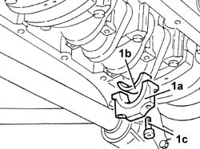
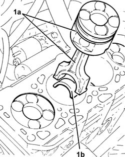
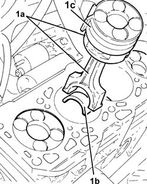

1028H10 CONNECTING ROD and PISTON SET - R&R
- Path
- Procedures > 10 ENGINE > 1028 PISTONS AND CONNECTING RODS > 1028H PISTONS AND CONNECTING RODS > 1028H10 CONNECTING ROD and PISTON SET - R&R
- Kind
- repair procedure (removal / refitting; the operation number is the code)
- Applies to
- engines: 2.4 JTD 20V; all production periods
- Interactive page
- https://sloeber94.github.io/elrnDB-lThss/en/#/850071
Applies to: engines: 2.4 JTD 20V; all production periods
 Removing
Removing
 Refitting
Refitting- Position the vehicle on a lift.
- Disconnect the negative battery terminal.
See in Op. 7055B54 PROTECTION/GUARD under engine - R.R.
See in Op. 7040D50 ENGINE COMPARTMENT UPPER SOUND INSULATION SHIELD - R.R.
See in Op. 1016A10 SOUND-PROOFING COVER - R.R.
See in Op. 1048B44 RIGID air supply PIPE from heat exchanger to intake manifold - R.R.
See in Op. 1048A56 UPPER RESONATOR - R.R.
See in Op. 1048A50 air inlet pipe to turbocharger - r + r
See in Op. 1048A21 AIR INLET HOSE FROM INTAKE TO FILTER - R.R.
See in Op. 1048A10 COMPLETE AIR FILTER -R.R.
See in Op. 1064A24 TURBOCHARGER - EXHAUST MANIFOLD - HOSE CONNECTED TO EXHAUST PIPE - R.R.
See in Op. 4450B04 Right FRONT WHEEL (one) - R.R.
See in Op. 7055B42 FRONT WHEEL ARCH LINER (one), left or right - R.R.
See in Op. 7055B64 Engine compartment DUST SEAL in front wheel arch (one), left or right - R.R.
See in Op. 1092G10 Engine components single drive BELT - R.R.
See in Op. 1092G21 Engine components single belt FIXED TENSIONER - R.R. with belt removed
See in Op. 1092A10 Crankshaft PULLEY - R.R.
See in Op. 1032D12 Timing system protective COVER(S) - R.R.
See in Op. 1016C10 SINGLE CYLINDER HEAD - R.R. and Replace gasket
See in Op. 1020A20 CRANKCASE SUMP - R.R. clean contact surfaces and apply sealant
1. Undo the bolts (1a) and remove the connecting rod caps (1b) complete with half-bearings (1c).

Applies to: engines: 2.4 JTD 20V; all production periods
1. Release and remove the piston/connecting rod assemblies (1a) complete with half-bearings (1b).

Applies to: engines: 2.4 JTD 20V; all production periods
Refitting
Removing1. Place the piston/connecting rod assemblies (1a) in their housings complete with half-bearings (1b) using a suitable fitting tool (1c).

Applies to: engines: 2.4 JTD 20V; all production periods
- Place the caps complete with half-bearings in their housings and secure them tightening the bolts to the recommended torque.
 | Value - daNm | Fastening | Component | Ø |
|---|---|---|---|---|
. | 2.0 + 60° | Bolt | CONNECTING ROD CAPS | M9 |
- Use the tool for the angular tightening of the connecting rod cap bolts.
 | Description | Code | Function |
|---|---|---|---|
. | Torque wrench | 1.860.942.000 | Connecting rod cap bolt tightening |
See in Op. 1020A20 CRANKCASE SUMP - R.R. clean contact surfaces and apply sealant
See in Op. 1016C10 SINGLE CYLINDER HEAD - R.R. and Replace gasket
See in Op. 1032D12 Timing system protective COVER(S) - R.R.
See in Op. 1092A10 Crankshaft PULLEY - R.R.
See in Op. 1092G21 Engine components single belt FIXED TENSIONER - R.R. with belt removed
See in Op. 1092G10 Engine components single drive BELT - R.R.
See in Op. 7055B64 Engine compartment DUST SEAL in front wheel arch (one), left or right - R.R.
See in Op. 7055B42 FRONT WHEEL ARCH LINER (one), left or right - R.R.
See in Op. 4450B04 Right FRONT WHEEL (one) - R.R.
See in Op. 1064A24 TURBOCHARGER - EXHAUST MANIFOLD - HOSE CONNECTED TO EXHAUST PIPE - R.R.
See in Op. 1048A10 COMPLETE AIR FILTER -R.R.
See in Op. 1048A21 AIR INLET HOSE FROM INTAKE TO FILTER - R.R.
See in Op. 1048A50 air inlet pipe to turbocharger - r + r
See in Op. 1048A56 UPPER RESONATOR - R.R.
See in Op. 1048B44 RIGID air supply PIPE from heat exchanger to intake manifold - R.R.
See in Op. 1016A10 SOUND-PROOFING COVER - R.R.
See in Op. 7040D50 ENGINE COMPARTMENT UPPER SOUND INSULATION SHIELD - R.R.
See in Op. 7055B54 PROTECTION/GUARD under engine - R.R.
- Fill the engine cooling system as described in the operation:
See in Op. 0010T20 Engine REFRIGERANT FLUID - Change
- Top up or, if necessary, change the engine oil referring to the instructions in the description:
See in Op. 0010T10 ENGINE OIL - Change
- Or:
See in Op. 0010T11 ENGINE OIL - Check level and top up if necessary
- Remove the vehicle from the lift.
Topics linked from this page (21)
- 0010T10 ENGINE OIL - Change
- 0010T11 ENGINE OIL - Check level and top up if necessary
- 0010T20 Engine REFRIGERANT FLUID - Change
- 1016A10 SOUND-PROOFING COVER - R.R.
- 1016C10 SINGLE CYLINDER HEAD - R.R. and Replace gasket
- 1020A20 CRANKCASE SUMP - R.R. clean contact surfaces and apply sealant
- 1032D12 Timing system protective COVER(S) - R.R.
- 1048A10 COMPLETE AIR FILTER -R.R.
- 1048A21 AIR INLET HOSE FROM INTAKE TO FILTER - R.R.
- 1048A50 air inlet pipe to turbocharger - r + r
- 1048A56 UPPER RESONATOR - R.R.
- 1048B44 RIGID air supply PIPE from heat exchanger to intake manifold - R.R.
- 1064A24 TURBOCHARGER - EXHAUST MANIFOLD - HOSE CONNECTED TO EXHAUST PIPE - R.R.
- 1092A10 Crankshaft PULLEY - R.R.
- 1092G10 Engine components single drive BELT - R.R.
- 1092G21 Engine components single belt FIXED TENSIONER - R.R. with belt removed
- 4450B04 Right FRONT WHEEL (one) - R.R.
- 7040D50 ENGINE COMPARTMENT UPPER SOUND INSULATION SHIELD - R.R.
- 7055B42 FRONT WHEEL ARCH LINER (one), left or right - R.R.
- 7055B54 PROTECTION/GUARD under engine - R.R.
- 7055B64 Engine compartment DUST SEAL in front wheel arch (one), left or right - R.R.